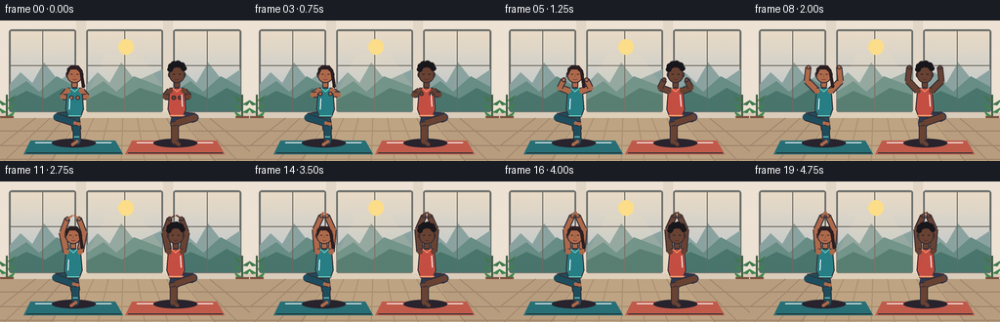
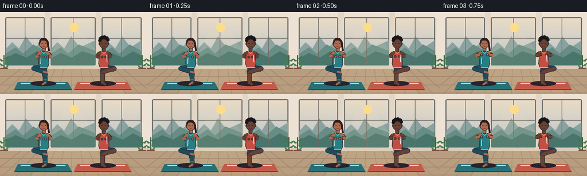

CODING AGENTS AS PIXEL WORLD MODELS
traex/GPT-5.6-Sol · instance_preservation_0031
点击播放 · 原生 RGB 像素
逐轮保存的候选
回放视频、检查图与代码变化。
每份候选均可单独播放。实际图片检查记录在下方工具轨迹中。
候选 01播放与检查图
点击播放 · 原生 RGB 像素


展开代码变化
--- 上一保存版本
+++ 本次保存版本
@@ -0,0 +1,213 @@
+from pathlib import Path
+import math
+import numpy as np
+from PIL import Image, ImageDraw, ImageFilter
+import artifact_io
+
+W,H,N = 256,144,20
+SS=4
+rng=np.random.default_rng(31)
+
+def sc(v): return int(round(v*SS))
+def pts(seq): return [(sc(x),sc(y)) for x,y in seq]
+def ellipse(d,box,fill,outline=None,width=1):
+ d.ellipse(tuple(sc(x) for x in box), fill=fill, outline=outline, width=sc(width) if outline else 1)
+def line(d,xy,fill,width,joint='curve'):
+ d.line(pts(xy), fill=fill, width=sc(width), joint=joint)
+def poly(d,xy,fill,outline=None,width=1):
+ d.polygon(pts(xy), fill=fill)
+ if outline: d.line(pts(xy+[xy[0]]), fill=outline, width=sc(width), joint='curve')
+def rounded(d,box,r,fill,outline=None,width=1):
+ d.rounded_rectangle(tuple(sc(x) for x in box),radius=sc(r),fill=fill,outline=outline,width=sc(width))
+
+def lerp(a,b,t): return a+(b-a)*t
+def mixp(a,b,t): return (lerp(a[0],b[0],t),lerp(a[1],b[1],t))
+def smooth(t):
+ t=max(0,min(1,t)); return t*t*(3-2*t)
+
+def capsule(d,a,b,color,w,outline=(47,45,55),ow=1):
+ line(d,[a,b],outline,w+2*ow)
+ line(d,[a,b],color,w)
+ r=w/2
+ ellipse(d,(a[0]-r,a[1]-r,a[0]+r,a[1]+r),color)
+ ellipse(d,(b[0]-r,b[1]-r,b[0]+r,b[1]+r),color)
+
+def background(frame):
+ im=Image.new('RGB',(W*SS,H*SS))
+ p=im.load()
+ # warm, softly changing morning light
+ for y in range(H*SS):
+ yy=y/(H*SS-1)
+ if yy<.69:
+ z=yy/.69
+ c=(int(245-65*z),int(226-30*z),int(203+12*z))
+ else:
+ z=(yy-.69)/.31
+ c=(int(186-44*z),int(172-37*z),int(151-31*z))
+ for x in range(W*SS): p[x,y]=c
+ d=ImageDraw.Draw(im)
+ # window wall panels
+ poly(d,[(0,0),(256,0),(256,98),(0,98)],(237,226,211))
+ # three tall windows
+ windows=[(9,9,78,94),(88,9,167,94),(177,9,247,94)]
+ for x0,y0,x1,y1 in windows:
+ rounded(d,(x0,y0,x1,y1),3,(165,204,218),(104,108,105),2)
+ # sky within
+ for yy in range(sc(y0+2),sc(y1-1)):
+ z=(yy/SS-y0)/(y1-y0)
+ col=(int(235-52*z),int(220-24*z),int(198+8*z))
+ d.line([(sc(x0+2),yy),(sc(x1-2),yy)],fill=col,width=1)
+ # distant mountains
+ poly(d,[(x0+1,65),(x0+12,53),(x0+24,64),(x0+36,43),(x0+51,62),(x1-1,50),(x1-1,93),(x0+1,93)],(139,163,160))
+ poly(d,[(x0+1,73),(x0+18,62),(x0+31,73),(x0+49,57),(x1-1,68),(x1-1,93),(x0+1,93)],(103,141,133))
+ poly(d,[(x0+1,81),(x0+18,72),(x0+37,80),(x0+55,69),(x1-1,76),(x1-1,93),(x0+1,93)],(73,117,109))
+ # mullions
+ line(d,[((x0+x1)/2,y0+1),((x0+x1)/2,y1)],(109,105,97),1)
+ line(d,[(x0,y0+37),(x1,y0+37)],(109,105,97),1)
+ # sun and glow on center window
+ ellipse(d,(121,19,137,35),(252,221,137))
+ # structural strips
+ poly(d,[(78,0),(88,0),(88,99),(78,99)],(226,214,198))
+ poly(d,[(167,0),(177,0),(177,99),(167,99)],(226,214,198))
+ poly(d,[(0,94),(256,94),(256,101),(0,101)],(218,204,186))
+ # plant at far left/right
+ for base,flip in [(7,1),(248,-1)]:
+ line(d,[(base,101),(base,76)],(63,94,68),2)
+ for k in range(5):
+ yy=82+k*4
+ side=flip*(-1 if k%2 else 1)
+ poly(d,[(base,yy),(base+side*(9+k%2),yy-6),(base+side*5,yy+1)],(66,118+5*k,80))
+ poly(d,[(base-7,98),(base+7,98),(base+5,110),(base-5,110)],(121,78,60))
+ # wooden floor
+ poly(d,[(0,100),(256,100),(256,144),(0,144)],(184,157,127))
+ for y in [113,128,142]: line(d,[(0,y),(256,y)],(156,129,103),1)
+ # floor boards perspective
+ for x in range(-20,281,24): line(d,[(128+(x-128)*.62,100),(x,144)],(160,134,108),1)
+ # sunbeam
+ overlay=Image.new('RGBA',im.size,(0,0,0,0)); od=ImageDraw.Draw(overlay)
+ poly(od,[(109,34),(143,34),(219,144),(55,144)],(255,236,177,22))
+ im=Image.alpha_composite(im.convert('RGBA'),overlay)
+ return im
+
+def mat_and_shadow(im,cx,color):
+ d=ImageDraw.Draw(im,'RGBA')
+ # mat, in perspective with edge and highlight
+ poly(d,[(cx-45,123),(cx+42,123),(cx+50,137),(cx-52,137)],tuple(color)+(235,))
+ line(d,[(cx-49,135.5),(cx+48,135.5)],(35,47,50,90),1)
+ line(d,[(cx-40,125),(cx+38,125)],(255,255,255,55),1)
+ ellipse(d,(cx-23,121,cx+22,130),(40,35,45,45))
+
+def draw_person(im,cx,frame,person):
+ d=ImageDraw.Draw(im,'RGBA')
+ t=frame/(N-1)
+ u=smooth(min(1,t/0.78))
+ # Calm asymmetrical breathing and tiny balancing sway; arm rise is the main movement.
+ sway=1.15*math.sin(frame*0.43+person['phase'])
+ breathe=.45*math.sin(frame*.50+person['phase'])
+ cx=cx+sway
+ face=person['face']; outline=(52,45,52,255)
+ hip=(cx,98+breathe*.25); shoulder_y=72-breathe*.25
+ neck=(cx,65-breathe*.25)
+ support=person['support']
+ support_x=cx+support*2
+ # Tree-pose bent leg opens away from the body; stable from frame to frame.
+ knee=(cx-support*18,99+0.45*math.sin(frame*.38+person['phase']))
+ foot=(support_x-support*1.5,105)
+ # supporting leg behind, outer silhouette
+ if person['pants']:
+ capsule(d,hip,(support_x,112),person['bottom'],8,outline,1)
+ capsule(d,(support_x,111),(support_x+.4,124),person['bottom'],6.5,outline,1)
+ capsule(d,(support_x+.4,124),(support_x-support*4,127),face,3.2,outline,1)
+ # bent leg in leggings
+ capsule(d,(cx-support*1,97),knee,person['bottom'],7.5,outline,1)
+ capsule(d,knee,foot,person['bottom'],6.2,outline,1)
+ capsule(d,foot,(foot[0]+support*4,foot[1]+1),face,3.3,outline,1)
+ else:
+ # man: shorts at upper thighs, bare calves
+ capsule(d,hip,(support_x,107),person['bottom'],9,outline,1)
+ capsule(d,(support_x,106),(support_x,124),face,6.2,outline,1)
+ capsule(d,(support_x,124),(support_x-support*4,127),face,3.3,outline,1)
+ capsule(d,(cx-support,98),knee,person['bottom'],8.5,outline,1)
+ capsule(d,knee,foot,face,6,outline,1)
+ capsule(d,foot,(foot[0]+support*4,foot[1]+1),face,3.2,outline,1)
+ # Arm keyframes: prayer -> open cactus -> raised overhead prayer.
+ def arm(side):
+ sh=(cx+side*7,shoulder_y)
+ if u<.46:
+ q=smooth(u/.46)
+ e=mixp((cx+side*12,78),(cx+side*18,63),q)
+ w=mixp((cx+side*3.2,79),(cx+side*17,49),q)
+ else:
+ q=smooth((u-.46)/.54)
+ e=mixp((cx+side*18,63),(cx+side*9,49),q)
+ w=mixp((cx+side*17,49),(cx+side*2.7,35),q)
+ return sh,e,w
+ arms=[arm(-1),arm(1)]
+ # arms go behind the tank; skin line with dark contour
+ for sh,e,w in arms:
+ capsule(d,sh,e,face,5.4,outline,1)
+ capsule(d,e,w,face,4.5,outline,1)
+ # torso tank top tapered polygon
+ poly(d,[(cx-7.2,69),(cx+7.2,69),(cx+9,91),(cx+6,99),(cx-6,99),(cx-9,91)],person['top'],outline,1)
+ # neckline, waist seam
+ line(d,[(cx-4.2,69),(cx,73),(cx+4.2,69)],person['accent'],1)
+ line(d,[(cx-6.5,97.5),(cx+6.5,97.5)],person['accent'],1)
+ # shoulder caps on top of torso
+ for side in (-1,1): ellipse(d,(cx+side*7-2.7,shoulder_y-2.7,cx+side*7+2.7,shoulder_y+2.7),face)
+ # neck
+ rounded(d,(cx-3.2,61,cx+3.2,69),2,face,outline,1)
+ # head, ears
+ ellipse(d,(cx-8.2,47,cx+8.2,64),face,outline,1)
+ ellipse(d,(cx-9,53,cx-7,58),face,outline,1); ellipse(d,(cx+7,53,cx+9,58),face,outline,1)
+ # hair style preserves identity
+ hair=person['hair']
+ if person['style']=='braid':
+ # crown and side-swept bun/braid
+ poly(d,[(cx-8,55),(cx-7.5,49),(cx-3,45.5),(cx+4,46),(cx+8,51),(cx+6.5,54),(cx+2,50),(cx-4,50),(cx-7,56)],hair)
+ capsule(d,(cx+6.5,52),(cx+9,67),hair,3.3,None,0)
+ ellipse(d,(cx+7.3,65,cx+10.7,69),hair)
+ else:
+ # clearly short curly hair
+ for ox,oy,r in [(-6,-1,3.2),(-3,-3,3.5),(1,-3.5,3.6),(5,-2,3.3),(7,1,2.8),(-7,2,2.8)]:
+ ellipse(d,(cx+ox-r,48+oy-r,cx+ox+r,48+oy+r),hair)
+ # facial details
+ eye=person['eye']
+ line(d,[(cx-4,55),(cx-2,55)],eye,.8); line(d,[(cx+2,55),(cx+4,55)],eye,.8)
+ line(d,[(cx,55.5),(cx-.3,58)],(112,77,66,220),.6)
+ line(d,[(cx-2,60),(cx,60.7),(cx+2,60)],person['lip'],.7)
+ # hands/fingers over the limb ends
+ for sh,e,w in arms:
+ ellipse(d,(w[0]-2.3,w[1]-2.3,w[0]+2.3,w[1]+2.3),face,outline,1)
+ if u>.78:
+ # fingers point together above head
+ line(d,[(w[0],w[1]),(cx+math.copysign(.6,w[0]-cx),w[1]-3.7)],face,2)
+ # anklet / clothing highlights for identity
+ if person['pants']:
+ line(d,[(support_x-2.5,119),(support_x+2.7,119)],person['accent'],1)
+ line(d,[(cx-5,80),(cx-5.5,91)],(255,255,255,65),1)
+ else:
+ line(d,[(cx-7.7,97),(cx+7.8,97)],person['accent'],1)
+ line(d,[(cx+4.7,76),(cx+5.5,88)],(255,255,255,55),1)
+
+people=[
+ dict(face=(174,106,75,255),top=(39,126,132,255),bottom=(30,78,94,255),accent=(116,211,200,255),hair=(43,31,34,255),eye=(47,31,31,255),lip=(118,46,57,255),style='braid',pants=True,support=1,phase=.2),
+ dict(face=(104,66,51,255),top=(196,78,66,255),bottom=(43,57,83,255),accent=(248,155,111,255),hair=(24,23,28,255),eye=(30,23,22,255),lip=(87,38,39,255),style='curls',pants=False,support=-1,phase=1.3)
+]
+
+def make_frame(i):
+ im=background(i)
+ mat_and_shadow(im,76,(40,111,118))
+ mat_and_shadow(im,180,(192,91,75))
+ draw_person(im,76,i,people[0])
+ draw_person(im,180,i,people[1])
+ # mild optical softness plus crisp supersampled reduction
+ im=im.convert('RGB').resize((W,H),Image.Resampling.LANCZOS)
+ arr=np.asarray(im).astype(np.int16)
+ # tiny deterministic film grain gives texture without temporal flicker
+ yy,xx=np.indices((H,W)); grain=((xx*13+yy*7)%9)-4
+ arr=np.clip(arr+grain[...,None]//3,0,255).astype(np.uint8)
+ return arr
+
+frames=np.stack([make_frame(i) for i in range(N)],axis=0)
+artifact_io.save(frames,Path(__file__).resolve().parent)
+print('saved',frames.shape,frames.dtype)
可观测工具轨迹
实际执行的命令与返回图片。
命令 1exit 0
/bin/bash -lc "cat prompt.txt && printf '\\n---RULES---\\n' && cat GENERATION_RULES.md && printf '\\n---SPEC---\\n' && cat task_spec.json"
命令 2exit 0
/bin/bash -lc "find . -maxdepth 2 -type f -printf '%p\\n' | sort | head -200 && printf '\\nTOOLS\\n' && command -v ffmpeg || true && command -v python3 || true"
命令 3exit 0
/bin/bash -lc 'cat artifact_io.py'
命令 4exit 0
/bin/bash -lc "cat > generate.py <<'PY'
from pathlib import Path
import math
import numpy as np
from PIL import Image, ImageDraw, ImageFilter
import artifact_io
W,H,N = 256,144,20
SS=4
rng=np.random.default_rng(31)
def sc(v): return int(round(v*SS))
def pts(seq): return [(sc(x),sc(y)) for x,y in seq]
def ellipse(d,box,fill,outline=None,width=1):
d.ellipse(tuple(sc(x) for x in box), fill=fill, outline=outline, width=sc(width) if outline else 1)
def line(d,xy,fill,width,joint='curve'):
d.line(pts(xy), fill=fill, width=sc(width), joint=joint)
def poly(d,xy,fill,outline=None,width=1):
d.polygon(pts(xy), fill=fill)
if outline: d.line(pts(xy+[xy[0]]), fill=outline, width=sc(width), joint='curve')
def rounded(d,box,r,fill,outline=None,width=1):
d.rounded_rectangle(tuple(sc(x) for x in box),radius=sc(r),fill=fill,outline=outline,width=sc(width))
def lerp(a,b,t): return a+(b-a)*t
def mixp(a,b,t): return (lerp(a[0],b[0],t),lerp(a[1],b[1],t))
def smooth(t):
t=max(0,min(1,t)); return t*t*(3-2*t)
def capsule(d,a,b,color,w,outline=(47,45,55),ow=1):
line(d,[a,b],outline,w+2*ow)
line(d,[a,b],color,w)
r=w/2
ellipse(d,(a[0]-r,a[1]-r,a[0]+r,a[1]+r),color)
ellipse(d,(b[0]-r,b[1]-r,b[0]+r,b[1]+r),color)
def background(frame):
im=Image.new('RGB',(W*SS,H*SS))
p=im.load()
# warm, softly changing morning light
for y in range(H*SS):
yy=y/(H*SS-1)
if yy<.69:
z=yy/.69
c=(int(245-65*z),int(226-30*z),int(203+12*z))
else:
z=(yy-.69)/.31
c=(int(186-44*z),int(172-37*z),int(151-31*z))
for x in range(W*SS): p[x,y]=c
d=ImageDraw.Draw(im)
# window wall panels
poly(d,[(0,0),(256,0),(256,98),(0,98)],(237,226,211))
# three tall windows
windows=[(9,9,78,94),(88,9,167,94),(177,9,247,94)]
for x0,y0,x1,y1 in windows:
rounded(d,(x0,y0,x1,y1),3,(165,204,218),(104,108,105),2)
# sky within
for yy in range(sc(y0+2),sc(y1-1)):
z=(yy/SS-y0)/(y1-y0)
col=(int(235-52*z),int(220-24*z),int(198+8*z))
d.line([(sc(x0+2),yy),(sc(x1-2),yy)],fill=col,width=1)
# distant mountains
poly(d,[(x0+1,65),(x0+12,53),(x0+24,64),(x0+36,43),(x0+51,62),(x1-1,50),(x1-1,93),(x0+1,93)],(139,163,160))
poly(d,[(x0+1,73),(x0+18,62),(x0+31,73),(x0+49,57),(x1-1,68),(x1-1,93),(x0+1,93)],(103,141,133))
poly(d,[(x0+1,81),(x0+18,72),(x0+37,80),(x0+55,69),(x1-1,76),(x1-1,93),(x0+1,93)],(73,117,109))
# mullions
line(d,[((x0+x1)/2,y0+1),((x0+x1)/2,y1)],(109,105,97),1)
line(d,[(x0,y0+37),(x1,y0+37)],(109,105,97),1)
# sun and glow on center window
ellipse(d,(121,19,137,35),(252,221,137))
# structural strips
poly(d,[(78,0),(88,0),(88,99),(78,99)],(226,214,198))
poly(d,[(167,0),(177,0),(177,99),(167,99)],(226,214,198))
poly(d,[(0,94),(256,94),(256,101),(0,101)],(218,204,186))
# plant at far left/right
for base,flip in [(7,1),(248,-1)]:
line(d,[(base,101),(base,76)],(63,94,68),2)
for k in range(5):
yy=82+k*4
side=flip*(-1 if k%2 else 1)
poly(d,[(base,yy),(base+side*(9+k%2),yy-6),(base+side*5,yy+1)],(66,118+5*k,80))
poly(d,[(base-7,98),(base+7,98),(base+5,110),(base-5,110)],(121,78,60))
# wooden floor
poly(d,[(0,100),(256,100),(256,144),(0,144)],(184,157,127))
for y in [113,128,142]: line(d,[(0,y),(256,y)],(156,129,103),1)
# floor boards perspective
for x in range(-20,281,24): line(d,[(128+(x-128)*.62,100),(x,144)],(160,134,108),1)
# sunbeam
overlay=Image.new('RGBA',im.size,(0,0,0,0)); od=ImageDraw.Draw(overlay)
poly(od,[(109,34),(143,34),(219,144),(55,144)],(255,236,177,22))
im=Image.alpha_composite(im.convert('RGBA'),overlay)
return im
def mat_and_shadow(im,cx,color):
d=ImageDraw.Draw(im,'RGBA')
# mat, in perspective with edge and highlight
poly(d,[(cx-45,123),(cx+42,123),(cx+50,137),(cx-52,137)],tuple(color)+(235,))
line(d,[(cx-49,135.5),(cx+48,135.5)],(35,47,50,90),1)
line(d,[(cx-40,125),(cx+38,125)],(255,255,255,55),1)
ellipse(d,(cx-23,121,cx+22,130),(40,35,45,45))
def draw_person(im,cx,frame,person):
d=ImageDraw.Draw(im,'RGBA')
t=frame/(N-1)
u=smooth(min(1,t/0.78))
# Calm asymmetrical breathing and tiny balancing sway; arm rise is the main movement.
sway=1.15*math.sin(frame*0.43+person['phase'])
breathe=.45*math.sin(frame*.50+person['phase'])
cx=cx+sway
face=person['face']; outline=(52,45,52,255)
hip=(cx,98+breathe*.25); shoulder_y=72-breathe*.25
neck=(cx,65-breathe*.25)
support=person['support']
support_x=cx+support*2
# Tree-pose bent leg opens away from the body; stable from frame to frame.
knee=(cx-support*18,99+0.45*math.sin(frame*.38+person['phase']))
foot=(support_x-support*1.5,105)
# supporting leg behind, outer silhouette
if person['pants']:
capsule(d,hip,(support_x,112),person['bottom'],8,outline,1)
capsule(d,(support_x,111),(support_x+.4,124),person['bottom'],6.5,outline,1)
capsule(d,(support_x+.4,124),(support_x-support*4,127),face,3.2,outline,1)
# bent leg in leggings
capsule(d,(cx-support*1,97),knee,person['bottom'],7.5,outline,1)
capsule(d,knee,foot,person['bottom'],6.2,outline,1)
capsule(d,foot,(foot[0]+support*4,foot[1]+1),face,3.3,outline,1)
else:
# man: shorts at upper thighs, bare calves
capsule(d,hip,(support_x,107),person['bottom'],9,outline,1)
capsule(d,(support_x,106),(support_x,124),face,6.2,outline,1)
capsule(d,(support_x,124),(support_x-support*4,127),face,3.3,outline,1)
capsule(d,(cx-support,98),knee,person['bottom'],8.5,outline,1)
capsule(d,knee,foot,face,6,outline,1)
capsule(d,foot,(foot[0]+support*4,foot[1]+1),face,3.2,outline,1)
# Arm keyframes: prayer -> open cactus -> raised overhead prayer.
def arm(side):
sh=(cx+side*7,shoulder_y)
if u<.46:
q=smooth(u/.46)
e=mixp((cx+side*12,78),(cx+side*18,63),q)
w=mixp((cx+side*3.2,79),(cx+side*17,49),q)
else:
q=smooth((u-.46)/.54)
e=mixp((cx+side*18,63),(cx+side*9,49),q)
w=mixp((cx+side*17,49),(cx+side*2.7,35),q)
return sh,e,w
arms=[arm(-1),arm(1)]
# arms go behind the tank; skin line with dark contour
for sh,e,w in arms:
capsule(d,sh,e,face,5.4,outline,1)
capsule(d,e,w,face,4.5,outline,1)
# torso tank top tapered polygon
poly(d,[(cx-7.2,69),(cx+7.2,69),(cx+9,91),(cx+6,99),(cx-6,99),(cx-9,91)],person['top'],outline,1)
# neckline, waist seam
line(d,[(cx-4.2,69),(cx,73),(cx+4.2,69)],person['accent'],1)
line(d,[(cx-6.5,97.5),(cx+6.5,97.5)],person['accent'],1)
# shoulder caps on top of torso
for side in (-1,1): ellipse(d,(cx+side*7-2.7,shoulder_y-2.7,cx+side*7+2.7,shoulder_y+2.7),face)
# neck
rounded(d,(cx-3.2,61,cx+3.2,69),2,face,outline,1)
# head, ears
ellipse(d,(cx-8.2,47,cx+8.2,64),face,outline,1)
ellipse(d,(cx-9,53,cx-7,58),face,outline,1); ellipse(d,(cx+7,53,cx+9,58),face,outline,1)
# hair style preserves identity
hair=person['hair']
if person['style']=='braid':
# crown and side-swept bun/braid
poly(d,[(cx-8,55),(cx-7.5,49),(cx-3,45.5),(cx+4,46),(cx+8,51),(cx+6.5,54),(cx+2,50),(cx-4,50),(cx-7,56)],hair)
capsule(d,(cx+6.5,52),(cx+9,67),hair,3.3,None,0)
ellipse(d,(cx+7.3,65,cx+10.7,69),hair)
else:
# clearly short curly hair
for ox,oy,r in [(-6,-1,3.2),(-3,-3,3.5),(1,-3.5,3.6),(5,-2,3.3),(7,1,2.8),(-7,2,2.8)]:
ellipse(d,(cx+ox-r,48+oy-r,cx+ox+r,48+oy+r),hair)
# facial details
eye=person['eye']
line(d,[(cx-4,55),(cx-2,55)],eye,.8); line(d,[(cx+2,55),(cx+4,55)],eye,.8)
line(d,[(cx,55.5),(cx-.3,58)],(112,77,66,220),.6)
line(d,[(cx-2,60),(cx,60.7),(cx+2,60)],person['lip'],.7)
# hands/fingers over the limb ends
for sh,e,w in arms:
ellipse(d,(w[0]-2.3,w[1]-2.3,w[0]+2.3,w[1]+2.3),face,outline,1)
if u>.78:
# fingers point together above head
line(d,[(w[0],w[1]),(cx+math.copysign(.6,w[0]-cx),w[1]-3.7)],face,2)
# anklet / clothing highlights for identity
if person['pants']:
line(d,[(support_x-2.5,119),(support_x+2.7,119)],person['accent'],1)
line(d,[(cx-5,80),(cx-5.5,91)],(255,255,255,65),1)
else:
line(d,[(cx-7.7,97),(cx+7.8,97)],person['accent'],1)
line(d,[(cx+4.7,76),(cx+5.5,88)],(255,255,255,55),1)
people=[
dict(face=(174,106,75,255),top=(39,126,132,255),bottom=(30,78,94,255),accent=(116,211,200,255),hair=(43,31,34,255),eye=(47,31,31,255),lip=(118,46,57,255),style='braid',pants=True,support=1,phase=.2),
dict(face=(104,66,51,255),top=(196,78,66,255),bottom=(43,57,83,255),accent=(248,155,111,255),hair=(24,23,28,255),eye=(30,23,22,255),lip=(87,38,39,255),style='curls',pants=False,support=-1,phase=1.3)
]
def make_frame(i):
im=background(i)
mat_and_shadow(im,76,(40,111,118))
mat_and_shadow(im,180,(192,91,75))
draw_person(im,76,i,people[0])
draw_person(im,180,i,people[1])
# mild optical softness plus crisp supersampled reduction
im=im.convert('RGB').resize((W,H),Image.Resampling.LANCZOS)
arr=np.asarray(im).astype(np.int16)
# tiny deterministic film grain gives texture without temporal flicker
yy,xx=np.indices((H,W)); grain=((xx*13+yy*7)%9)-4
arr=np.clip(arr+grain[...,None]//3,0,255).astype(np.uint8)
return arr
frames=np.stack([make_frame(i) for i in range(N)],axis=0)
artifact_io.save(frames,Path(__file__).resolve().parent)
print('saved',frames.shape,frames.dtype)
PY
python3 generate.py
ls -lh pixels.npz inspection.png index.html frames/00.png frames/19.png"命令 5exit 0
/bin/bash -lc "python3 - <<'PY'
import numpy as np
from PIL import Image
z=np.load('pixels.npz')['pixels']
print('pixels',z.shape,z.dtype,'range',hex(int(z.min())),hex(int(z.max())))
a=np.stack([np.array(Image.open(f'frames/{i:02}.png')) for i in range(20)])
print('frames',a.shape,a.dtype)
print('mean RGB',a.mean((0,1,2)).round(1))
print('changed pixels consecutive',[int(np.any(a[i]"'!=a[i-1],2).sum()) for i in range(1,20)])
print('"'first-last MAE',np.abs(a[0].astype(int)-a[-1].astype(int)).mean().round(2))
assert a.shape==(20,144,256,3) and a.dtype==np.uint8
assert len(list(__import__('pathlib').Path('frames').glob('*.png')))==20
PY"保存候选 1 份；完成命令 5 次；可验证图片返回 0 张。原始 API 响应与完整日志保留在本地。